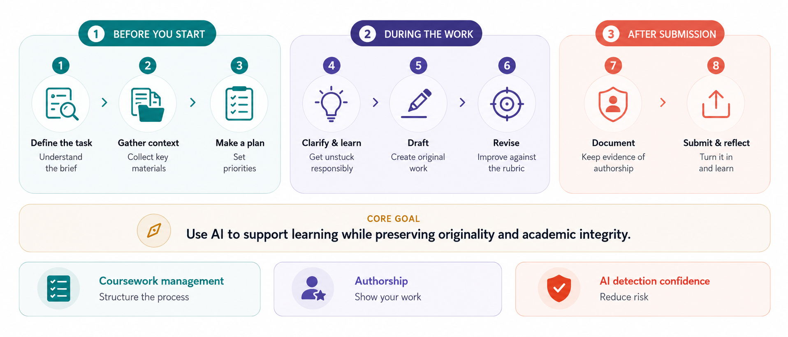
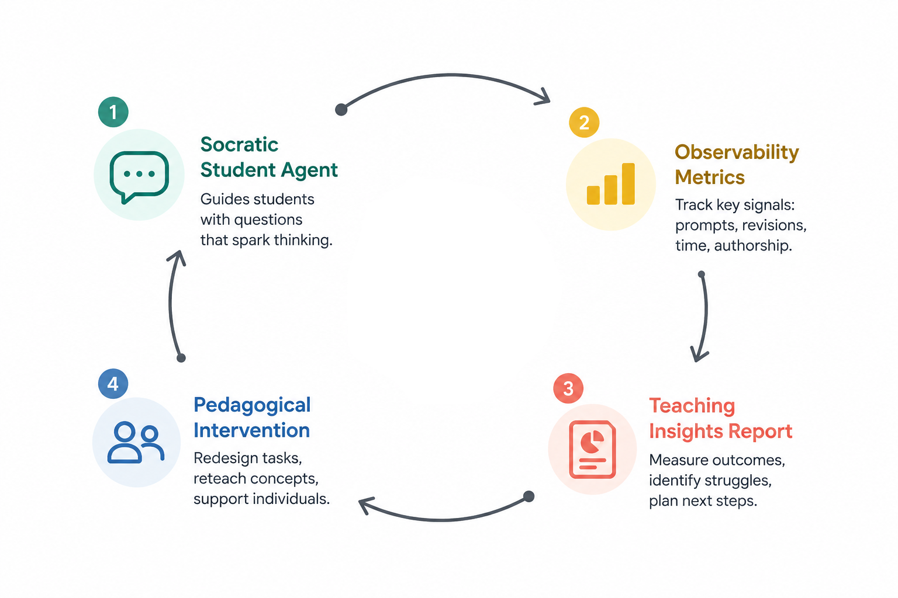
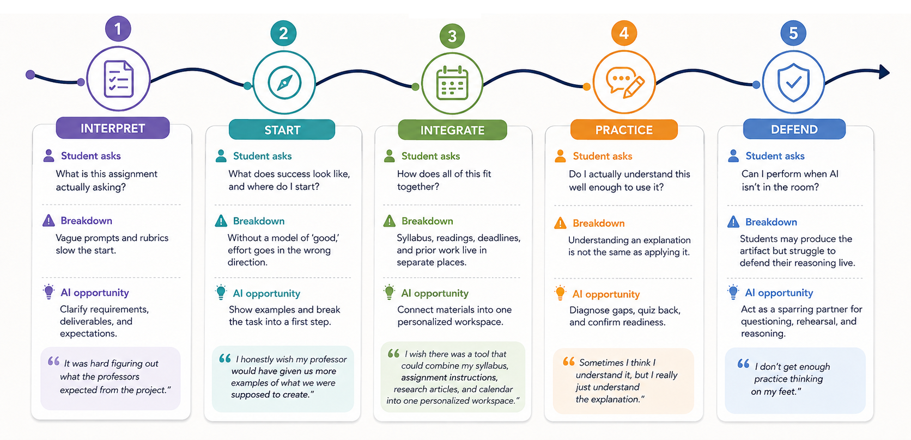

Case study
AI & Education Research at Superhuman
How do you build AI that helps students make progress without replacing learning and gives educators enough visibility to trust it?

At a Glance
- Owned foundational, quantitative, and synthesis research across Superhuman's student and higher-education work during a 12-week internship
- Connected fragmented student research into a JTBD framework and product opportunity map
- Extended that framework through diary research on how students actually use AI across coursework
- Connected student and faculty needs into a shared model for AI-supported learning: the learning-visibility loop
- Produced work cited by PMM, referenced by Engineering, used in product discussions, and incorporated into EDU-facing content
The Research Challenge
AI in education was moving faster than any single product roadmap. Student teams were exploring new AI experiences, EDU teams were thinking about instructors and institutions, and the organization already had years of research on writing, authorship, academic integrity, and student workflows.
The core question was therefore bigger than evaluating one feature: where can education-specific AI create differentiated value when students already have access to powerful general-purpose AI?
Across projects, I used the lightest method that could reduce the uncertainty at hand: synthesizing existing evidence when enough research already existed, conducting new qualitative work when the problem was poorly understood, and using quantitative research when findings needed to be tested and communicated at scale.
How the Research Arc Developed
Each project narrowed a different part of the same question: what should education-specific AI understand, support, and preserve?
Synthesize
Reorganized existing student research through a JTBD lens to identify the highest-leverage opportunity areas.
Reframe
Pivoted higher-ed research toward the durable question of what AI should support — and what should remain human.
Extend
Diary research mapped how AI fits into the broader student workflow and where context still breaks down.
Validate
Survey analysis and message testing translated the research into broader evidence and education positioning.
1. Start With What the Organization Already Knows
My first strategic question was not “what study should we run?” It was “what do we already know?” Student research existed across multiple studies, formats, and teams, but the findings were difficult to use as one coherent product story.
I synthesized prior Grammarly research and survey evidence into a Jobs-to-be-Done framework centered on the student's core goal: producing work that meets course expectations while preserving learning and academic integrity. The synthesis mapped the journey from understanding an assignment through planning, producing, verifying, and submitting work.

The synthesis highlighted three opportunity areas: Authorship, Coursework Management, and Academic Integrity. More importantly, it shifted the product conversation from isolated AI features toward the broader academic workflow.
Impact: the work was shared across Student, EDU, and Docs audiences and was later cited internally as evidence supporting coursework-management and authenticity directions.
2. Follow the Problem When the Product Changes
A second study began around a specific education product concept. Midway through the work, that product direction was discontinued. Continuing with the original discussion guide would have produced research for a decision the organization no longer needed to make.
I reframed the study around the more durable question underneath it: what should AI support in education, and what needs to remain human? I redesigned the research and conducted in-depth interviews across faculty and higher-education leaders, examining AI governance, teaching adaptation, academic integrity, and visibility into student learning.
The research surfaced a recurring tension. Students need AI that helps them learn without taking over the work; instructors need more insight into how learning happened, not simply another detector telling them whether AI may have been used.
What this changed: the research moved from evaluating one product concept to defining principles that could guide a broader student-and-instructor education system.
From Interviews to the Student-Instructor Feedback Loop

I synthesized those needs into the student-instructor feedback loop: a student-facing agent guides rather than generates, leaving a meaningful record of where the student struggled and how they progressed. An instructor-facing layer turns those patterns into teaching decisions, which then shape the next learning experience.
The key product implication was that the student and instructor experiences should not be designed independently. The quality of instructor insight depends on the kind of student interaction the product creates in the first place.
The framework turned a broad debate about AI in education into a more actionable product principle: support learning in ways that preserve student ownership while making the learning process useful to educators.
3. Zoom Back Out to the Student's Real Workflow
Diary research extended the earlier JTBD synthesis beyond writing and into the day-to-day reality of coursework. Across assignment types and disciplines, students repeatedly moved through the same higher-level process: Interpret → Orient → Coordinate → Learn & Produce → Verify & Demonstrate.
The important insight was not that students need another AI tool at every stage. They already use general-purpose AI throughout the workflow. The gap is continuity and context: assignments, rubrics, materials, deadlines, prior feedback, and learning history remain fragmented across tools and sessions.

Product implication: differentiate through course-aware context rather than answer generation alone. The opportunity is a system that understands where a student is in the workflow and carries useful context forward instead of making them rebuild it every time.
4. Validate and Activate the Story at Scale
I also owned quantitative work supporting the education business. An existing student perception survey was losing roughly three-quarters of participants around one section. I diagnosed the attrition pattern, redesigned the study, relaunched recruitment, and analyzed the combined dataset.
The results provided quantitative evidence around writing improvement, confidence, and perceptions of appropriate AI use across student groups, including students writing in a second language and students facing financial barriers.
In parallel, I embedded message testing into higher-education interviews to understand how education positioning landed with institutional stakeholders. This let the same research program inform both product direction and how the value proposition was communicated.
Impact: the quantitative findings supported annual impact reporting, while the broader education research informed positioning and EDU-facing content.
Research That Could Travel
An important part of the internship was learning that a finding is only useful if the organization can absorb it. I adapted outputs to the decision and audience rather than treating the research report as the final deliverable.
- Student + Docs: JTBD and diary research helped frame the opportunity beyond writing toward coursework, context, and continuity
- EDU: the learning-visibility loop connected student support with instructor needs and informed education-facing recommendations
- Engineering: research frameworks were referenced in downstream product discussions and Class Agents demos
- PMM + Marketing: findings supported roadmap narratives, message testing, annual impact reporting, and EDU-facing content
What I Took Away
- Synthesis can be a research method. New data is not always the highest-value next step.
- Research plans should follow the decision. When the product changed, the study had to change with it.
- Mixed methods work best as a sequence. Qualitative work explains the system; quantitative work tests how broadly the pattern holds.
- Influence requires translation. The same evidence has to be framed differently for Product, Design, Engineering, and Marketing.
Outcome
Across 12 weeks, I moved from fragmented research evidence to a more connected view of the student learning journey, the instructor side of that system, and the role education-specific AI could play between them. The work informed product opportunity framing, education strategy, messaging, and external-facing research narratives — while giving me experience operating inside the ambiguity and cross-functional constraints of a fast-moving product organization.